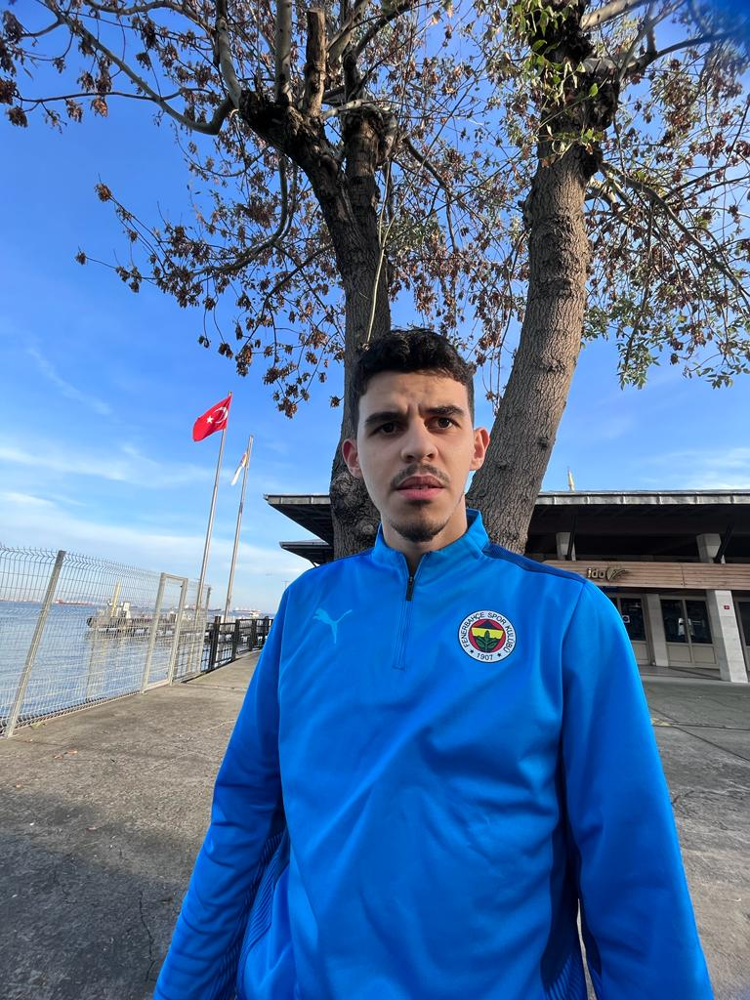

Mustafa Oktay
Summary
Merhaba ben Mustafa Oktay full stack developer olma yolunda ilerliyorum Nişantaşı üniversitesi Bilgisayar programcılığı mezunuyum şu anda Zara şirketinde part-time satış danışmanı olarak çalışıyorum.Hedefim iyi bir geliştirici olmak.
Hi I'm Mustafa Oktay I'm on my way to becoming a full stack developer I graduated from Nişantaşı university Computer programming I'm currently working as a part-time sales consultant at Zara company.My goal is to become a good developer.
Education
Lise okuduğum okullar
- Tuna lisesi (2015-2016)
- Fenerbahçe Anadolu lisesi (2016)
- Eğitim bilimleri koleji (2016-2018)
- Temel bilimleri koleji (2018-2019)
- Era koleji (2019-2020)
Üniversite okullarım
- Nişantaşı üniversitesi (Bilgisayar programcılığı 2021-2023)
Work experience
- Koton Store ( Part-Time sales consultant) 2021-2022
- Zara Store ( Part-Time sales consultant) 2022- )
Skills
- Leadership: ⭐⭐⭐
- problem solving: ⭐⭐⭐
- teamwork: ⭐⭐⭐⭐
Other